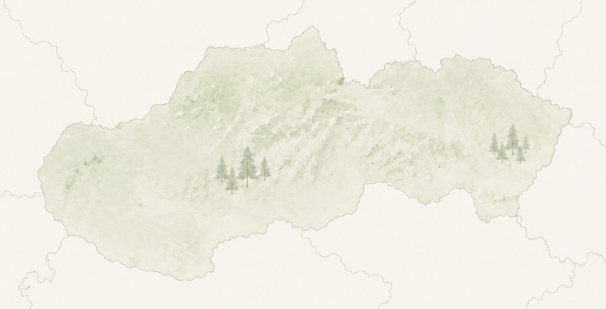

Sprievodca,
ktorý čaká priamo na mieste
QR LINK premieňa mestá, hrady a náučné chodníky na príbehy. Naskenujte kód na tabuli a vypočujte si, čo sa tu naozaj stalo – alebo si vyberte miesto na mape a naplánujte výlet vopred.
Audio príbehy
na každom mieste
na každom mieste
Tipy na výlety
a zaujímavosti
a zaujímavosti
Objavujte Slovensko
zážitkovou formou
zážitkovou formou

Objavujte miesta na mape

–miest na mape
–zastavení s príbehmi
Inšpirujte sana váš ďalší výlet